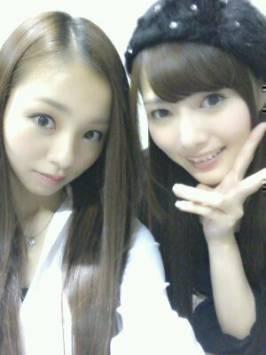
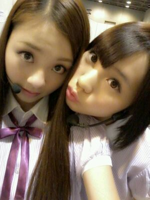
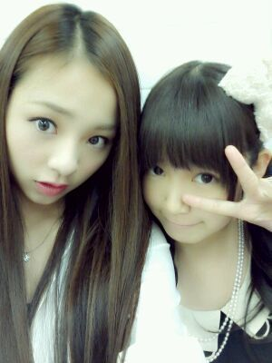

| 2012/09 24 Mon | 川村真洋 大阪個握も本間 最高やっ たぁ*・ゝ・*))) ろって ぃー |
ほっほーーい★
ろってぃーでぇす。
名古屋全握に
大阪個握と
お疲れ様でしたw(・∀・)))☆
今日はたくさん
写真貼ろうかなっ・▽・♪
まず
『まいやん☆とろってぃー☆』
(個握が終わって開場を出る直前)

名古屋での全握ミニライブ★!!
B,Cブロックの方の方々は
遠くて見えにくかった
だろうのに
最後まで盛り上がって
くださり本当ーっに
ありがとうございました。
本間楽しかった!!・∀・
まひろは
涙がまだ悲しみだった頃
音が出ないギター
走れ bicycle
を歌いましたよん♪
...
ここで
『あみ☆とろってぃー☆』
(名古屋ミニライブ直前)

大阪個別握手会★
めちゃくちゃ楽しかったw*´ω`*
大阪の方や
遠くから来てくださった方も
本当にありがとうございましたっ><
まひろは5部で6時半からなのに
朝早くから来て
ずっと待っていて
くださった方もいて
本当になんか
ん〜 この感謝の気持ちを
ちゃんと返せたのかなっ・ω・`?
って思います。
本当に 皆様から
優しくて暖かいお言葉ばかり
もらって
すごく嬉しかったです*^^*
幸せな時間だった♪
違うレーンの方や
遠くの方からも
手をふってくれたり
話しかけてきてくださり
ありがとう*^^*
ちゃんとこっちからも
見えてましたよぉ〜う´∀`)))☆
そんなこんなで
その時のろってぃー私服★☆★
真っ白のシャツに
黒のインナー
青のパンツに
ヒョウ柄のくつ。
シルバーのアクセ達です´ω`
最近
『ろってぃーって
オシャレ番長だね♪』
ってよく言って頂けて
嬉しい気持ちです。
サンキューです☆
移動のバスはずっと
あみ♪とでした。
あみ♪ まひろの腕
かんでくるんです
どーしよー。^^
まひろも 噛みついたろー・∀・))★
ほんで, ホテルは
ひめかと一緒〜〜*・ω・*
仲良く寝たねっ^^
そんな 『ひめか と ろってぃー』
(5部の握手会前)

はぁーい。
とゆうことでっ!!
写メ何枚はっただらう?ω
四枚かな・ω・
以上っ!!
ろってぃーでした♪
本間に皆様のこと
大好きよっ♪
次 また会えるの
楽しみにしとくからね・▽・
それまで まひろ
いっぱい頑張っとく〃ω〃
のし。